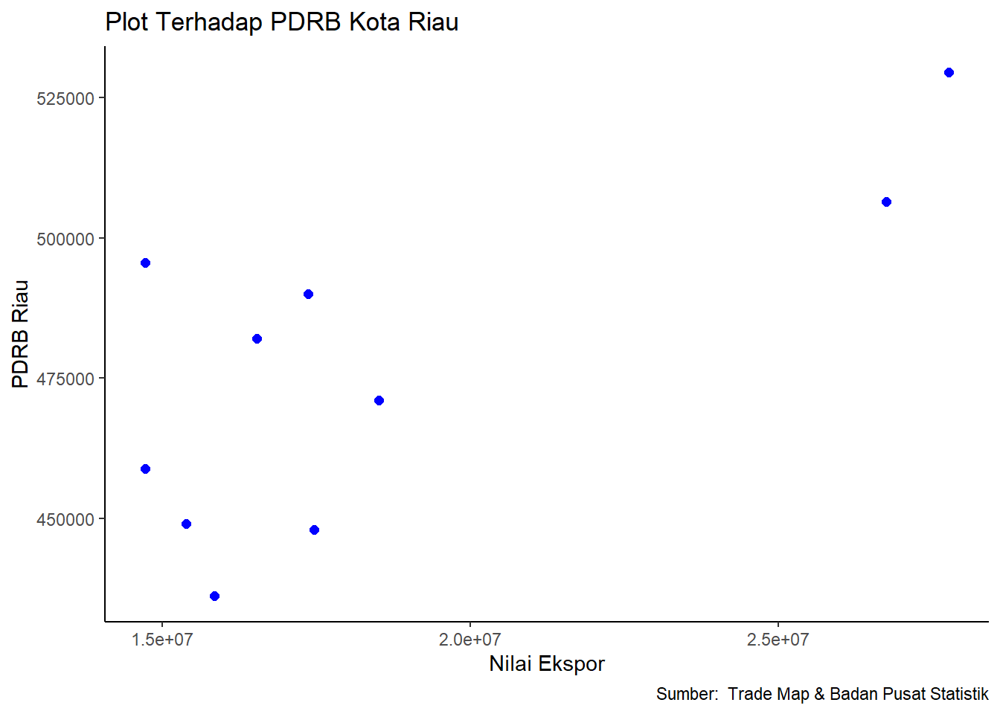

Pengaruh Ekspor Minyak Kelapa Sawit Terhadap PDRB Kota Riau Pada Tahun 2013-2022
Metode Penelitian Politeknik APP Jakarta
Author
Fawwazky Raja Putra Kiswandi (220204121)
Published
January 14, 2024
Politeknik APP Jakarta
1 Pendahuluan
1.1 Latar Belakang
Ekspor merupakan kegiatan pengangkutan barang, komoditas, dan jasa dari suatu negara ke negara lain secara sah, terutama dalam konteks kegiatan perdagangan. Proses ekspor umumnya melibatkan tindakan mengeluarkan barang atau komoditas dari wilayah suatu negara untuk kemudian diimpor oleh negara lain, dan hal ini dilakukan sesuai dengan prosedur dan regulasi yang telah ditetapkan oleh pemerintah. Untuk melakukan ekspor barang dalam jumlah besar, seringkali memerlukan koordinasi dengan pihak bea cukai di negara pengirim dan penerima. Ekspor merupakan elemen integral dalam aktivitas perdagangan internasional.
Pentingnya fokus pada ekspor bagi Indonesia telah diperkuat sejak tahun 1983. Sejak periode tersebut, pemerintah memberikan perhatian khusus pada kegiatan ekspor sebagai cara untuk mendorong pertumbuhan ekonomi. Hal ini sejalan dengan perubahan strategi industrialisasi yang beralih dari penekanan pada industri substitusi impor ke arah industri promosi ekspor. Dalam konteks ini, transaksi di mana konsumen dalam negeri membeli barang impor atau konsumen luar negeri membeli barang domestik menjadi hal yang umum. Persaingan antar produk semakin ketat, di mana selain harga, kualitas atau mutu barang menjadi faktor penentu daya saing suatu produk.
Salah satu sektor yang menjadi kontributor utama dalam kegiatan ekspor Indonesia berasal dari sektor pertanian, khususnya subsektor perkebunan, dengan minyak kelapa sawit sebagai salah satu komoditas unggulan. Industri minyak kelapa sawit termasuk dalam kategori industri strategis sektor pertanian (agro-based industry) dan telah mengalami perkembangan pesat di negara-negara tropis seperti Indonesia, Malaysia, dan Thailand.
Tanaman kelapa sawit mengalami pertumbuhan produksi yang sangat cepat jika dibandingkan dengan tanaman perkebunan lain di Indonesia. Menurut data yang diperoleh dari Kementerian Pertanian pada tahun 2012, produksi kelapa sawit di Indonesia meningkat dari 17,54 juta ton pada tahun 2008 menjadi 23,52 juta ton pada tahun 2012. Rata-rata pertumbuhannya mencapai 7,7% per tahun selama periode 2008-2012. Menurut data dari Badan Pusat Statistik Kalimantan Selatan pada tahun 2020, pada bulan Agustus 2019, sebagian besar penduduk Kalimantan Selatan memiliki mata pencaharian sebagai petani. Persentase penduduk Kalimantan Selatan yang bekerja di sektor pertanian mencapai 30,03%, diikuti oleh sektor jasa sebesar 50,94%, dan sektor industri sebesar 19,03%. Jumlah penduduk yang bekerja secara keseluruhan mencapai 2,04 juta orang.
Dalam upaya mengembangkan perekonomian, Pemerintah Daerah Provinsi Kalimantan Selatan mengusung sektor pertanian, terutama subsektor perkebunan, sebagai salah satu alternatif pembangunan ekonomi. Komoditas utama yang difokuskan dalam pengembangan ini adalah kelapa sawit. Kelapa sawit menjadi tanaman yang sangat diminati oleh masyarakat Kalimantan Selatan karena tanah yang sesuai untuk pertumbuhannya, keuntungan ekonomis yang lebih tinggi dibandingkan dengan tanaman lain, serta memiliki posisi yang signifikan dalam industri regional. Oleh karena itu artikel ini membahas seberapa besar pengaruh ekspor minyak kelapa sawit terhadap PDRB Kota Riau Pada Tahun 2013-2022.
1.2 Ruang Lingkup
Dalam penelitian ini akan dibatasi pembahasan mengenai bagaimana inflasi memiliki dampak terhadap pertumbuhan ekonomi, dengan fokus pada periode sepuluh tahun belakangan. Ruang lingkup penelitian ini akan terbatas pada penggunaan data yang diperoleh dari situs web Kementerian Dalam Negeri.
1.3 Rumusan Masalah
Berdasarkan pembahasan latar belakang di atas, dapat diidentifikasi beberapa indikator yang menjadi pokok permasalahan dalam penelitian ini. Rumusan masalah yang diajukan adalah sebagai berikut: 1. Bagaimana pengaruh ekspor kelapa sawit terhadap PDRB kota riau pada 10 tahun terakhir yang dimulai pada tahun 2013-2022?
1.4 Tujuan Penelitian
Berdasarkan konteks latar belakang dan rumusan masalah, tujuan ini dapat dirinci sebagai berikut: 1. Tujuan penulisan ini adalah untuk menganalisis pengaruh ekspor kelapa sawit terhadap PDRB kota riau pada 10 tahun terakhir yang dimulai pada tahun 2013-2022?
1.5 Manfaat Penelitian
Berdasarkan konteks latar belakang dan rumusan masalah, manfaat dibuatnya artikel ini yaitu untuk mengetahui seberapa besar pengaruh ekspor kelapa sawit terhadap PDRB kota Riau pada 10 tahun terakhi.
1.6 Package
Packages yang digunakan sebagai berikut:
library(tidyverse)
── Attaching core tidyverse packages ──────────────────────── tidyverse 2.0.0 ──
✔ dplyr 1.1.4 ✔ readr 2.1.4
✔ forcats 1.0.0 ✔ stringr 1.5.1
✔ ggplot2 3.4.4 ✔ tibble 3.2.1
✔ lubridate 1.9.3 ✔ tidyr 1.3.0
✔ purrr 1.0.2
── Conflicts ────────────────────────────────────────── tidyverse_conflicts() ──
✖ dplyr::filter() masks stats::filter()
✖ dplyr::lag() masks stats::lag()
ℹ Use the conflicted package (<http://conflicted.r-lib.org/>) to force all conflicts to become errors
library(readxl)library(WDI)
2 Studi Pustaka
2.1 EKSPOR
Menurut (Rachman, 2013) ekspor merupakan salah satu kegiatan perdagangan yang berperan besar dalam ekonomi regional dan nasional. Tren perbaikan ekonomi gloal mempengaruhi perekonomian kawasan, terutama aktivitas perdagangan luar negeri, yaitu ekspor. Dengan kata lain, salah satu faktor yang mempengaruhi kegiatan ekspor adalah keadaan perekonomian dunia. Jika situasi ekonomi global membaik, maka akan berdampak positif pada aktivitas perdagangan dunia, termasuk ekspor produk pertanian.
2.2 PERTUMBUHAN EKONOMI
Pertumbuhan ekonomi, seperti yang dijelaskan oleh Kuznets (1971), merujuk pada peningkatan kapasitas jangka panjang suatu negara untuk menyediakan berbagai barang ekonomi bagi penduduknya. Peningkatan kapasitas ini dapat dicapai melalui kemajuan teknologi, penyesuaian kelembagaan, dan ideologis sebagai respons terhadap berbagai tuntutan kondisi yang ada. Produk Domestik Bruto (PDB) menjadi faktor penting dalam mengukur pertumbuhan ekonomi, menggambarkan total produksi barang dan jasa dalam satu waktu tertentu di suatu negara atau wilayah.
2.3 PDRB
Produk Domestik Regional Bruto (PDRB) merupakan jumlah keseluruhan nilai tambah yang dihasilkan di seluruh sektor ekonomi dalam suatu wilayah atau daerah. Nilai tambah total diperoleh dengan menghitung output atau nilai yang dihasilkan dan menguranginya dengan biaya. Komponen nilai tambah total mencakup pendapatan (seperti gaji, suku bunga, biaya penggunaan lahan, dan keuntungan), depresiasi, dan pajak tidak langsung bersih. Oleh karena itu, PDRB daerah dihitung dengan menambahkan total nilai tambah dari setiap sektor ekonomi.
2.4 PERTANIAN
Sektor pertanian merujuk pada kegiatan manusia yang melibatkan budidaya tanaman dan pemanfaatan sumber daya hayati pertanian untuk menghasilkan sumber pangan, energi, dan pengelolaan lingkungan. Secara lebih luas, sektor pertanian mencakup subsektor tanaman pangan, perkebunan, peternakan, kehutanan, dan perikanan. Sektor ini memegang peran penting sebagai salah satu sumber pendapatan utama bagi masyarakat Indonesia. (Sukirno, 2007).
3 Metode Penelitian
3.1 Data
Tahun
Nilai Ekspor
PDRB Riau
2013
15.838.850
436.187,51
2014
17.464.905
447.986,78
2015
15.385.275
448.991,96
2016
14.716.275
458.769,34
2017
18.513.121
470.983,51
2018
16.527.848
482.064,63
2019
14.716.275
495.607,05
2020
17.364.812
489.995,75
2021
26.755.136
506.471,91
2022
27.765.830
529.532,98
3.2 Metode analisis
3.3 Kuantitatif
Jenis dan sumber data yang digunakan dalam penelitian ini adalah data sekunder yang tersusun dalam bentuk runtun waktu (time series) dari tahun 2013 hingga 2022. Data tersebut meliputi: nilai ekspor minyak kelapa sawit Indonesia, Sumber data diperoleh dari berbagai instansi terkait, termasuk Badan Pusat Statistik (BPS), Bank Indonesia (BI), dan Kementerian Pertanian.
3.4 Deskriptif
metode deskriptif digunakan untuk memberikan gambaran sistematis dan faktual mengenai perkembangan setiap variabel ekspor minyak kelapa sawit dan pertumbuhan ekonomi.
4 Pembahasan
4.1 Pembahasan masalah
Pada bagian ini dapat ditampilkan data yang telah dikumpulkan :
setwd('C:/Metopel/UAS - Fawwazky Raja Putra Kiswandi')read_excel("latihan1.xlsx")
Diketahui : X = Nilai Ekspor Kelapa Sawit Y = PDRB Kota Riau
dat<-read_excel('latihan1.xlsx')library(ggplot2)ggplot(data=dat, aes(x=X, y=Y))+geom_point(color='blue', size=2)+labs(title="Plot Terhadap PDRB Kota Riau",x="Nilai Ekspor",y="PDRB Riau",caption ="Sumber: Trade Map & Badan Pusat Statistik") +theme_classic()

4.2 Analisis masalah
Hasil pengaruh nilai ekspor terhadap PDRB Kota Riau diestimasi menggunakan regresi univariat. Hasilnya ditunjukkan sebagai berikut:
Call:
lm(formula = Y ~ X, data = dat)
Residuals:
Min 1Q Median 3Q Max
-28420 -12045 -3239 13509 36074
Coefficients:
Estimate Std. Error t value Pr(>|t|)
(Intercept) 3.930e+05 2.828e+04 13.896 6.96e-07 ***
X 4.520e-03 1.484e-03 3.045 0.0159 *
---
Signif. codes: 0 '***' 0.001 '**' 0.01 '*' 0.05 '.' 0.1 ' ' 1
Residual standard error: 21290 on 8 degrees of freedom
Multiple R-squared: 0.5369, Adjusted R-squared: 0.479
F-statistic: 9.273 on 1 and 8 DF, p-value: 0.01594
Hasil di atas menunjukkan hasil estimasi Ordinary Least Squares (OLS) dengan menggunakan model regresi multivariat. Tujuan dari analisis regresi ini adalah untuk menyelidiki keterkaitan antara variabel dependen dan variabel independen. Analisis ini khususnya dilakukan untuk mengeksplorasi dampak variabel dependen, yaitu Produk Domestik Regional Bruto (PDRB) Kota Riau terhadap variabel independen, yakni nilai ekspor minyak sawit.
Dari hasil regresi, ditemukan bahwa nilai F sebesar 9,273 dengan probabilitas (prob value) sebesar 0,01594. Artinya, terdapat dampak yang cukup signifikan dari nilai ekspor minyak sawit terhadap PDRB Kota Riau selama periode 2013-2022. Selain itu, nilai R menunjukkan sejauh mana variabel independen mempengaruhi variabel dependen. Koefisien determinasi R sebesar 47,9%, yang menandakan bahwa hampir separuh variasi PDRB Kota Riau dapat dijelaskan oleh nilai ekspor minyak sawit, sementara 52,1% sisanya dipengaruhi oleh faktor-faktor lain yang tidak termasuk dalam cakupan penelitian ini.
5 Kesimpulan
Kesimpulan dari penelitian ini menunjukkan pentingnya peran ekspor minyak sawit dalam mempengaruhi pertumbuhan ekonomi Kota Riau. Hasil analisis menunjukkan bahwa adanya hubungan yang signifikan antara nilai ekspor minyak sawit dan Produk Domestik Regional Bruto (PDRB) daerah Riau. Dampak positif ini dapat dilihat dari nilai F sebesar 9,273 dengan probabilitas (prob value) 0,01594, yang menegaskan adanya pengaruh yang cukup besar selama rentang waktu 2013-2022. Faktor-faktor eksternal yang tidak dimasukkan dalam penelitian ini menyumbang sebanyak 52,1% terhadap variasi PDRB. Oleh karena itu, masih diperlukan upaya lebih lanjut untuk mengidentifikasi dan memahami faktor-faktor tersebut untuk mendapatkan gambaran yang lebih komprehensif.
6 Referensi
Badan Pusat Statistik. (2022). Retrieved January 14, 2024, from https://riau.bps.go.id/indicator/52/69/1/pdrb-adhk-kabkota.html
Dama, H. Y. (2016). Pengaruh Produk Domestik Regional Bruto (PDRB) Terhadap Tingkat Kemiskinan di Kota Manado (Tahun 2005-2014). Jurnal Berkala Ilmiah Efisiensi, 16(3).
Ermawati, T., & Saptia, Y. (2013). Kinerja ekspor minyak kelapa sawit I ndonesia. Buletin Ilmiah Litbang Perdagangan, 7(2), 129-148.
ITC Trade Map. (2022). Retrieved January 14, 2024, from https://www.trademap.org/
Mughniyati, N., & Saroni, C. (2023). Pengaruh Produksi Kelapa Sawit dan Nilai Ekspor Minyak Kelapa Sawit terhadap Produk Domestik Regional Bruto (PDRB) Sektor Pertanian Provinsi Kalimantan Selatan. JIEP: Jurnal Ilmu Ekonomi dan Pembangunan, 6(1), 136-144.
Nurmalita, V., & Bowo, P. A. (2019). Analisis Faktor-Faktor yang Mempengaruhi Ekspor Minyak Kelapa Sawit Indonesia ke India. Economic Education Analysis Journal, 8(2), 605-619.